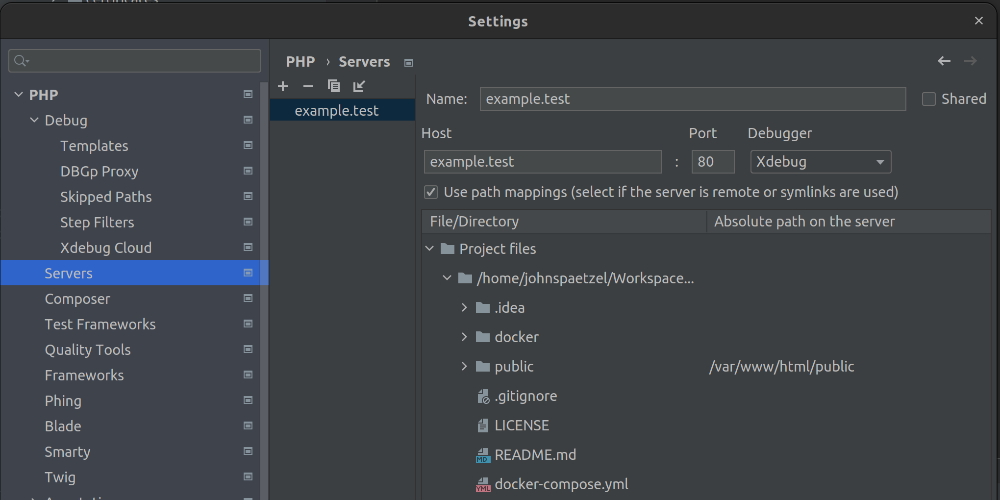

This post goes through a sample project I built that shows this off using docker, apache, php, and xdebug for local development.
Want to skip straight to the complete sample project? Click here!
Project Overview
- docker/certificates/ – gitignored folder for holding your dev certs
- docker/web/Dockerfile – web container
- docker/web/configs/apache/ – apache configs for example.test site
- docker/web/configs/php/ - php configs (for xdebug with docker)
- public/ – your application index
Configuring php:8.1-apache
The default php:8.1-apache docker image isn’t ready for development out of the box. Here’s some of the changes I recommend making.
Installing PHP Extensions
COPY --from=mlocati/php-extension-installer /usr/bin/install-php-extensions /usr/local/bin/
RUN set -eux; \
install-php-extensions \
xdebug \
;
Customizing PHP
COPY docker/web/configs/php/*.ini $PHP_INI_DIR/conf.d/
This example only includes a xdebug.ini config, but you can add additional ini files here to make other changes.
Configure Apache sites and enabling mods
COPY ./docker/web/configs/apache/sites-enabled/* /etc/apache2/sites-enabled/
RUN a2enmod ssl \
&& a2enmod allowmethods \
&& a2enmod headers \
&& a2enmod mime \
&& a2enmod rewrite
That’s the bare minimum, here’s a few more things you might want to do Install Composer
COPY --from=composer/composer:2-bin /composer /usr/bin/composer
Change the document root
ENV APACHE_DOCUMENT_ROOT /var/www/html/
RUN sed -ri -e 's!/var/www/html!${APACHE_DOCUMENT_ROOT}!g' /etc/apache2/sites-available/*.conf
RUN sed -ri -e 's!/var/www/!${APACHE_DOCUMENT_ROOT}!g' /etc/apache2/apache2.conf /etc/apache2/conf-available/*.conf
View the complete Dockerfile here.
Configuring SSL
You’ll need some self-signed certificates in order to configure SSL. I’ve used mkcert to create and trust them on my localhost. Before you proceed, install mkcert.
mkcert -install
mkcert example.test
mv example.*.pem docker/certificates/
Using xDebug
With this configuration xDebug should be ready to go. The only thing I needed to do in PHPStorm is enable listening for connections and configure the path mapping.

Conclusion
There’s only a few more things left to do.
Add an entry for the site to your hosts file
127.0.0.1 example.test
Start the containers
docker compose up
You should now be able to access and debug the public/index.php file by going to https://example.test/ in any browser on your host.